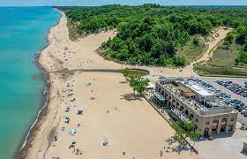
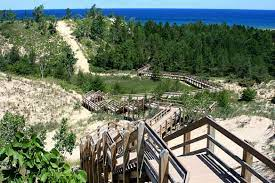
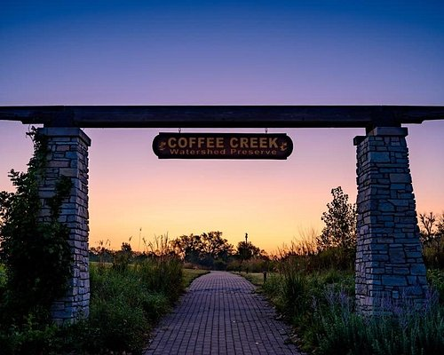

Go to the Beach
Lake Michigans beaches are a great way to spend a hot day

Explore the Dunes National Park
Miles of trails through the dunes and surrounding woods

Walk through the watershed preserve
Coffee Creek preserve is a great place to spot some wildlife